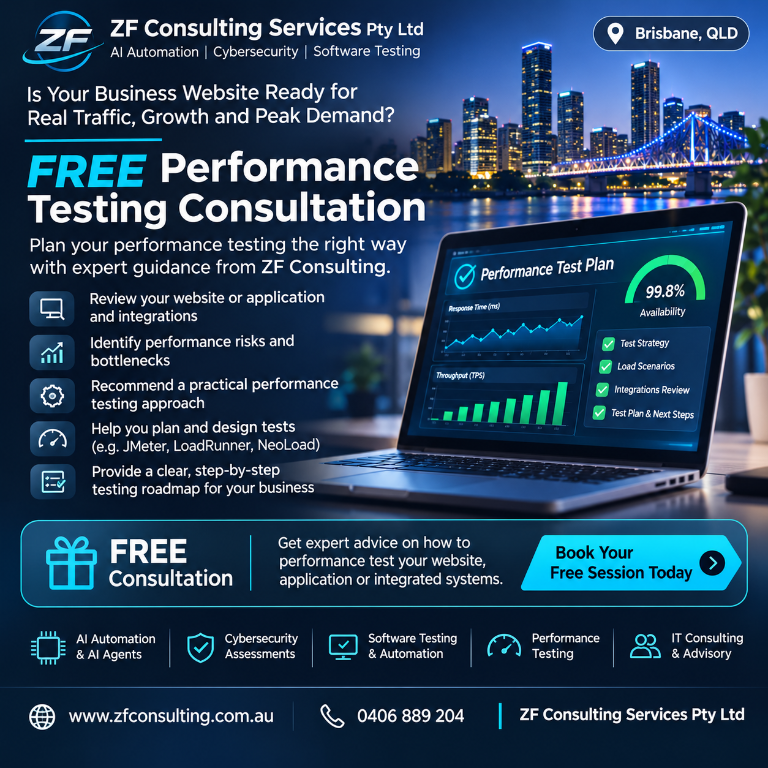

Understand your application
Review the high-level website or application architecture and discuss how its main components work together.
 F CONSULTING SERVICES
F CONSULTING SERVICESFree planning and advisory session · Brisbane
Plan for real traffic, growth and peak demand with professional guidance on how to approach performance testing for your website or application.
Book your free session
Review the high-level website or application architecture and discuss how its main components work together.
Talk through APIs, databases, payment or identity services, and other connected systems that may affect performance.
Discuss likely bottlenecks and performance risks based on your architecture, traffic expectations and known concerns.
Get guidance on load-testing strategy, useful scenarios and tools such as JMeter, LoadRunner or NeoLoad where appropriate.
Leave with practical recommendations for what to investigate or test next and a clearer path for your business.
The free session is for initial planning and advisory guidance. It does not include executing a load test, writing test scripts, a detailed technical audit or remediation work. If hands-on testing is the right next step, its scope can be discussed separately.
Tell us about your website or application, the systems it connects to and any performance concerns you have. We’ll discuss whether a planning session is a good fit.
Request a free planning session